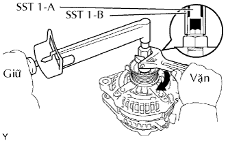
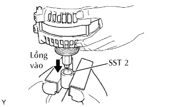

MÁY PHÁT > LẮP LẠI |
| 1. LẮP CỤM RÔTO MÁY PHÁT |
Lắp khung đầu dẫn động lên rôto máy phát.
Lắp rôto máy phát và vòng đệm.
| 2. LẮP CỤM STATO (CUỘN DÂY MÁY PHÁT) |
Dùng đầu khẩu 21 mm và một máy ép, ép từ từ cụm stato vào.
 |
Lắp cuộn dây máy phát (stato) bằng 4 bu lông xuyên.
| 3. LẮP CỤM GIÁ ĐỠ CHỔI THAN MÁY PHÁT |
Trong khi ấn 2 chổi than vào bên trong giá đỡ chổi than, cắm chốt có đường kính 1.0 mm vào lỗ giá đỡ chổi than.
Lắp giá đỡ chổi than bằng 2 vít.
Kéo chốt ra khỏi giá đỡ chổi than.
| 4. LẮP CÁCH ĐIỆN CỦA CỰC |
Lắp cách điện của cực.
| 5. LẮP NẮP PHÍA SAU MÁY PHÁT |
 |
Lắp nắp đầu bằng 3 đai ốc.
| 6. LẮP PULI MÁY PHÁT |
|  |
| Hạng mục | Mã số |
| SST 1-A và 1-B | 09820-06010 |
| SST 2 | 09820-06020 |
Lắp puli vào trục rôto máy phát bằng cách xiết chặt puli máy phát bằng tay.
Giữ SST (1-A) bằng cân lực, và xiết chặt SST (1-B) cùng chiều kim đồng hồ đến mômen xiết tiêu chuẩn.
|  |
Kẹp SST lên êtô.
Lắp SST (1-A) và (1-B) vào SST 2, và gắn đai ốc bắt puli vào SST 2.
Hãy xiết chặt đai ốc bắt puli bằng cách vặn SST (1-A) theo hướng như chỉ ra trên hình vẽ.
Tháo máy phát ra khỏi SST2.
 |
Vặn SST (1-B), và tháo SST (1-A) và (1-B).
Quay puli máy phát, và kiểm tra rằng puli quay êm.